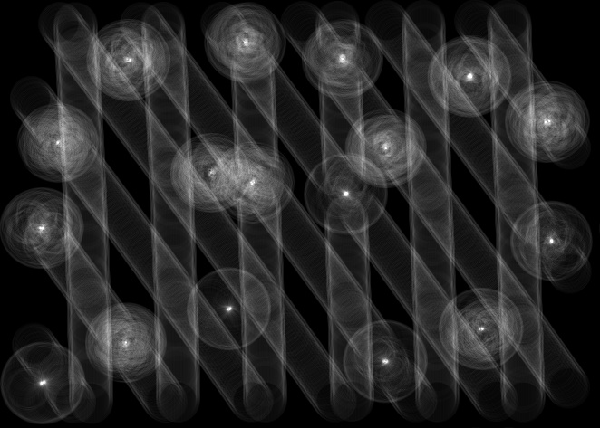
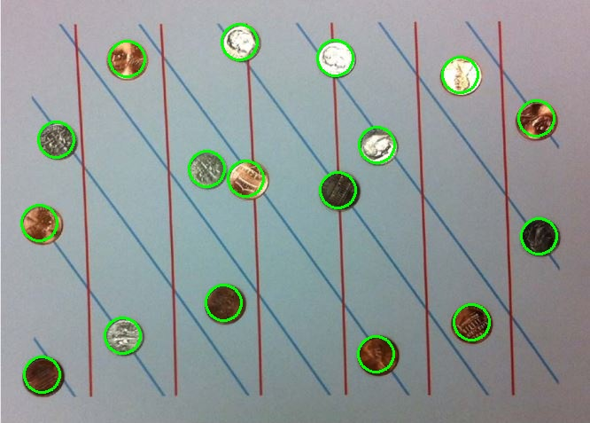

Hough Transform (circle detection)
GitHub
Following is the Algorithm used to implement vertical and diagonal line detection:
Apply sobel for edge detection (own implementation)
Apply global thresholding (own implementation)
Initialize accumulation matrix a, b plane to all zeros
Scan through each pixel in image, find a and b for all theta from (0 to 360) using a fixed approx radius(can be updated depending on the results) at each point, and increment the point by 1 in a, b. A very beautiful observation can be seen here as all the points in the circumference of the circle will results in circles which will converge at the the center of the circle, making it the brightest point.
Now pick the brightest point (highest value points) and draw circles around them, this will result in circles around any circular object in the image, here it is the coins.
AB plane image, we can see here that the coin centers are the brightest points.

Coin detection
